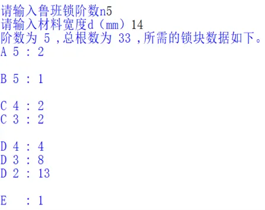
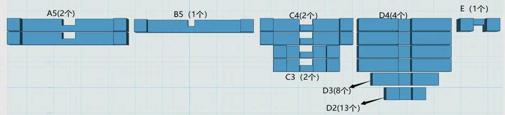
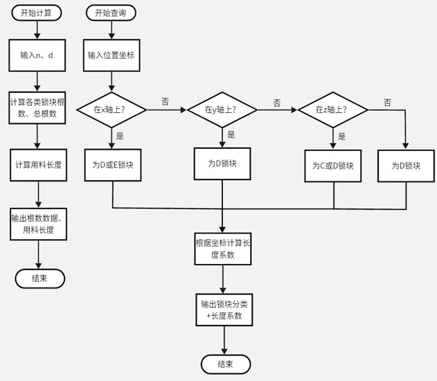
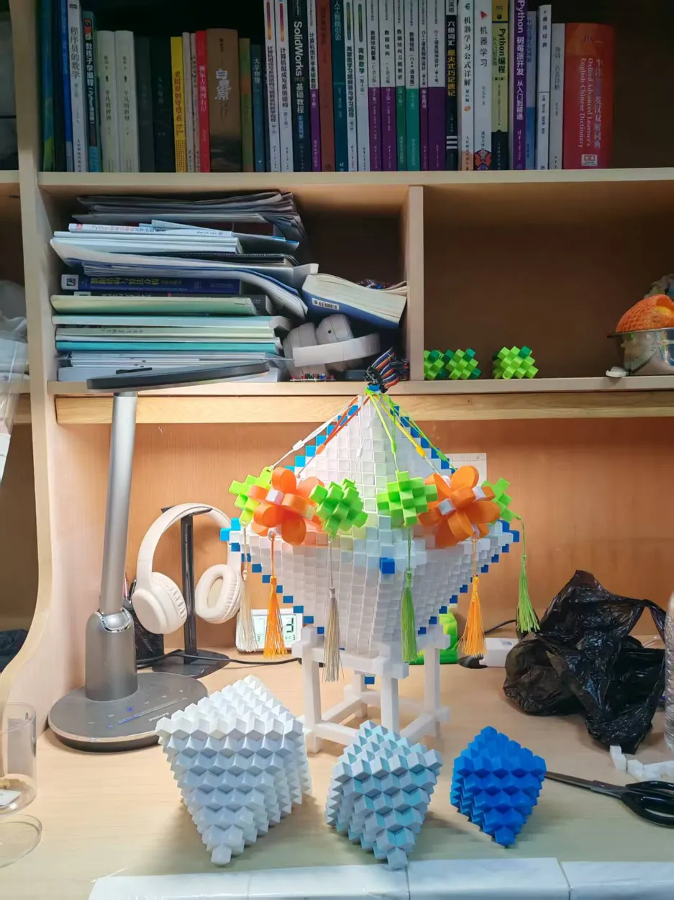
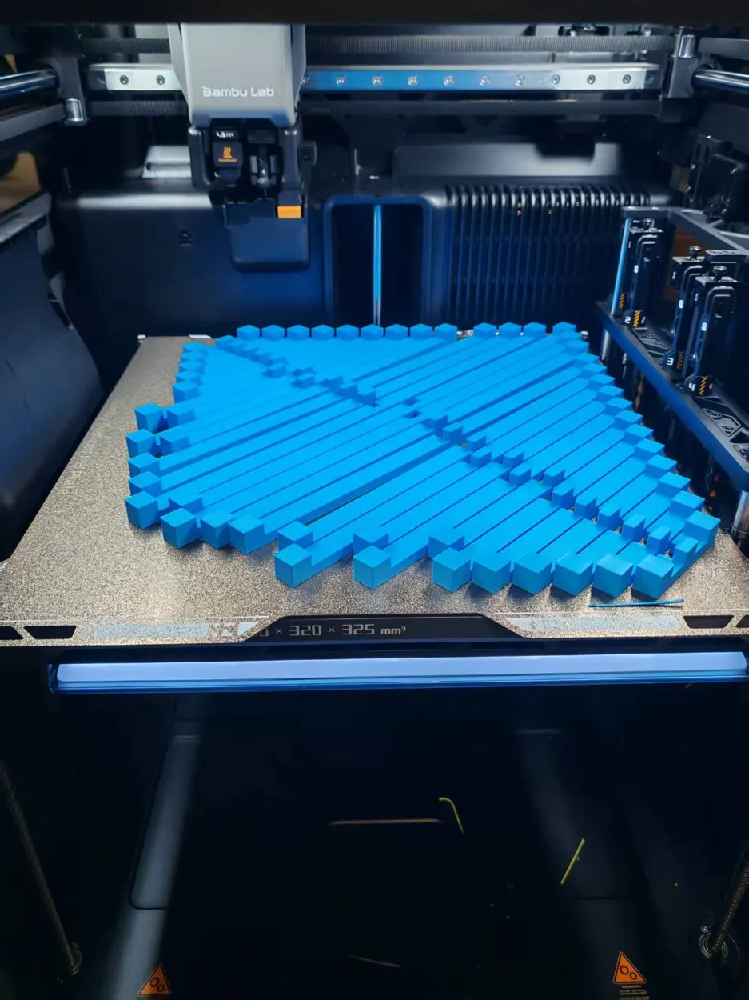
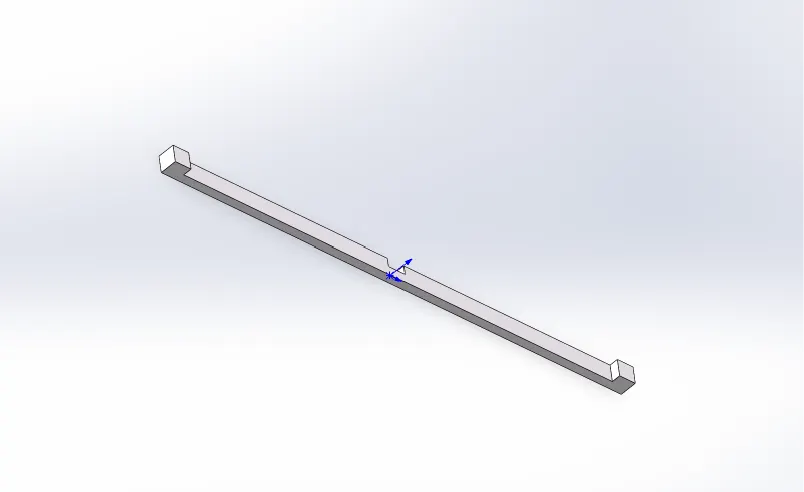
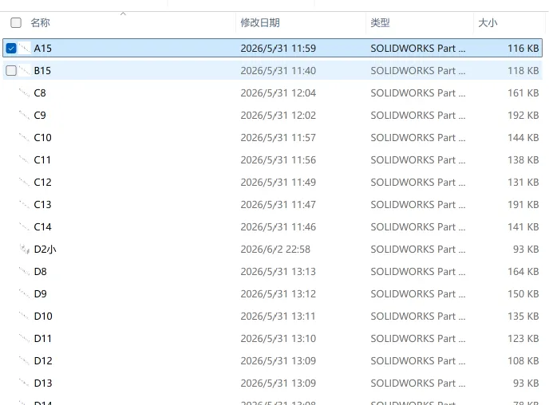
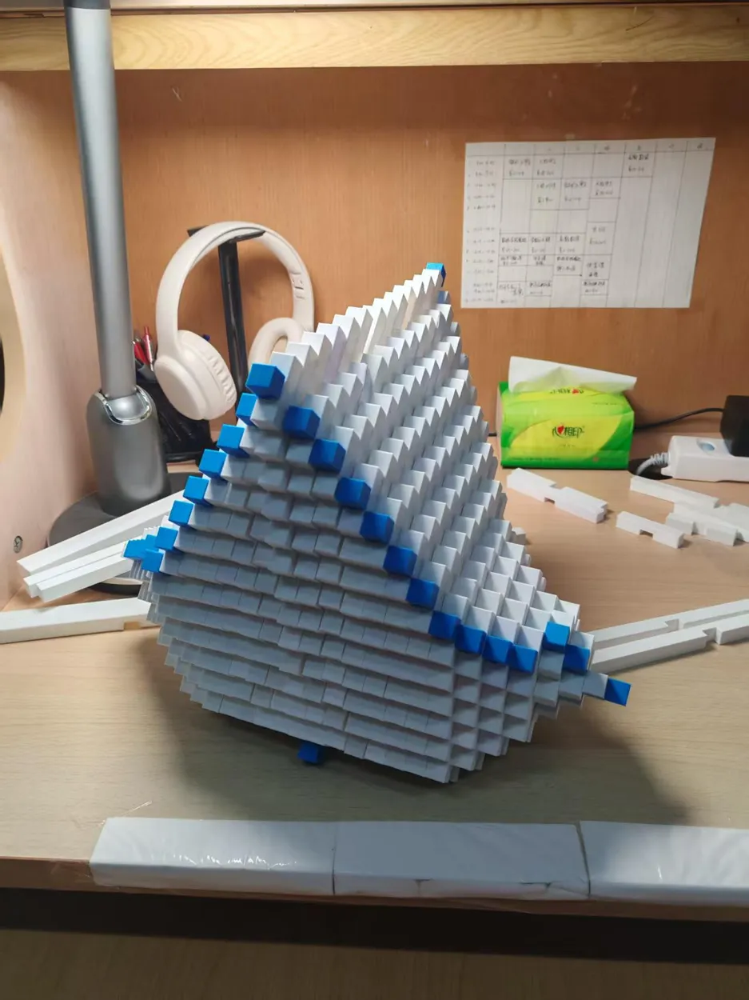

返回硬件项目索引
返回硬件项目索引菠萝鲁班锁制作与拼接的通用方法
阅读项目文档 ↓鲁班锁是一种常见的益智玩具，本研究选取其中常见的一类——菠萝鲁班锁进行研究。我在大量地制作和拼接菠萝鲁班锁的基础上，总结出了菠萝鲁班锁一般简便的制作方法——“z轴集中法”和通用的拼接方法——“八步法”；运用数列、函数、立体几何等数学知识推导出了菠萝鲁班锁各类锁块根数公式、总根数公式，并研究菠萝鲁班锁的一些数学性质；把计算公式编写成Scratch、Python、C++程序；还将程序转换为人们常用的微信小程序、HTML网页版、电脑应用程序、手机APP；用木工方法和3D打印进行实践验证，设计制作了市面上没有的99、129、289、393、649根菠萝鲁班锁，验证了方法的可行性、普适性；本研究的成果为鲁班锁爱好者提供了制作和拼接菠萝鲁班锁的理论支撑和方法指引，方便了它的普及推广与生产应用。










项目文档
鲁班锁制作与拼接软件系统
鲁班锁制作与拼接软件系统
目前主要实现了两个功能：
1.计算菠萝鲁班锁所需锁块根数、所需材料长度、，辅助制作
2.查询任意位置锁块编号，方便拼接
2.html网页版
3.exe应用程序
4.手机app
5.C++/Python的原装程序
这是算法的流程图。
功能一：计算锁块根数、长度
开始运行程序，点击“计算”图标，软件会询问：“请输入菠萝鲁班锁阶数n”，用户输入后，软件会用变量和列表的形式输出计算结果，包括锁块最大长度、总根数以及每种锁块的根数。我们可以根据需要把列表等数据形式导出为文本文档或者Word文档。用户可以根据计算结果直接画图制作相应的鲁班锁，制作完成后按照“八步法”拼接，就能做出任意阶数的菠萝鲁班锁。
例如，输入阶数为5，可以知道总根数为33根、D2锁块有13根等。
功能二：计算所用木材的总长度
点击“计算”图标，输入阶数n后，软件还会询问“请输入木料宽度（mm）”，用户输入后，软件会用变量形式输出用料信息，包括用料总长度数（以1个柱宽为单位长度）、材料的总长度（mm）。用户可以根据计算结果购买材料、预算成本等。
例如，计算5阶大菠萝锁，输入宽度为14mm，计算出用料长度数为161，用料长度为2254mm。用户可以进一步把这个数据换算成所需一定长度木条的根数、成本价格等。
功能三：查询任意位置锁块的编号和长度系数
点击“查询”图标按钮，开始锁块查询的程序。输入位置坐标，如（0,0,2），程序就会以变量的形式输出长度系数、长度、锁块编号。
例如，在6阶鲁班锁中查询位置（0,0,2），输出结果为编号C4以及其长度系数为4。
样例图片：
通过这里输出的简单的A/B/C/D/E可以判断锁块分类，按照长度系数进行建模制作。
锁块分类图：
进一步改进：
1.输入阶数自动生成全部锁块3D模型
2.拼接过程动画演示
3.拍照自动识别阶数，给出拼接教程
393根巨型鲁班锁的制作和拼接
393根巨型鲁班锁的制作和拼接
暑假期间按照软件系统指示，计算了15阶393根菠萝鲁班锁的所需锁块情况，solidworks绘制了所有锁块（这一点上还没有实现自动化，是下一步的研究方向。测试AI建模无法制作能拼接的鲁班锁锁块，存在很大误差），并3D打印。
随后不断修改尺寸，使得能拼上，反复练习手法，使得拼接时不松散不垮掉。重复很多次之后拼接完成。
这是总体成品：
这一张是豆包去背景P了一下：
这是照的照片，最大的那一个：
锁块之一，设计难度不大，主要是要设计的太多，以后争取实现自动化：
部分锁块文件，总共是393个：
3D打印：
某一次拼接了95%但是散花了，后来重新拆开再拼接：
鲁班锁的最大最重吉尼斯世界纪录保持者为天津职业大学辛全生师傅。该成果虽然没有我的根数多，是99根的，但是他使用比较粗的实木——缅甸红花梨木进行制作，所以重达一千三百多斤。
辛老师做的鲁班锁（99根），世界上最大鲁班锁吉尼斯纪录：
但是我在学校没有找到过能加工较大型木材的切割机。咨询过阳志和佳朔学长，可能确实没有。后续如果有机会，有带锯机/轮锯等等，并有买木材（木条）的话，可以尝试打破这个吉尼斯世界纪录。
主要是没有加工的机器，不知道金工有没有能加工的，有的话可以更加便捷地打破记录。
下一步计划：
1.制作市面上的鲁班锁36件套，进一步研究鲁班锁结构
2.研读鲁班锁相关文献，撰写《鲁班锁制作与拼接方法研究综述》论文并发表
3.再进一步制作更大的，争取打破吉尼斯世界纪录
4.对鲁班锁计算机建模和生成算法进行研究，结合计算机图形学、CV等